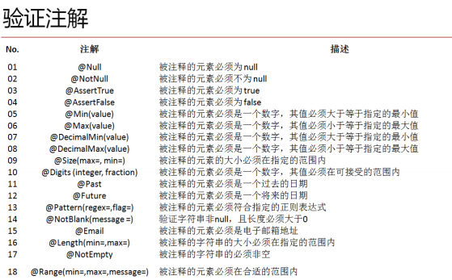
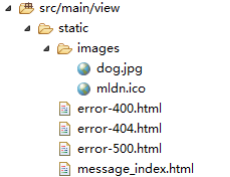

原文连接:https://www.cnblogs.com/sovy/p/11527237.html
一、异常处理
2.1、数据验证
现在假设说要进行表单信息提交，肯定需要有一个表单，而后这个表单要将数据提交到 VO 类中，所以现在的基本实现如下：
1、 建立一个 Member.java 的 VO 类：

package cn.study.microboot.vo;
import java.io.Serializable;
import java.util.Date;
@SuppressWarnings("serial")
public class Member implements Serializable {
private String mid ;
private Integer age ;
private Double salary ;
private Date birthday ;
public String getMid() {
return mid;
}
public void setMid(String mid) {
this.mid = mid;
}
public Integer getAge() {
return age;
}
public void setAge(Integer age) {
this.age = age;
}
public Double getSalary() {
return salary;
}
public void setSalary(Double salary) {
this.salary = salary;
}
public Date getBirthday() {
return birthday;
}
public void setBirthday(Date birthday) {
this.birthday = birthday;
}
@Override
public String toString() {
return "Member [mid=" + mid + ", age=" + age + ", salary=" + salary
+ ", birthday=" + birthday + "]";
}
}2、 由于此时的程序之中需要进行日期的转换处理操作，那么就需要为其做一个转换处理的格式配置，修改 AbstractBaseController 类，追加如下的转换操作方法绑定：
@InitBinder
public void initBinder(WebDataBinder binder) { // 在本程序里面需要针对于日期格式进行处理
// 首先建立一个可以将字符串转换为日期的工具程序类
SimpleDateFormat sdf = new SimpleDateFormat("yyyy-MM-dd") ;
// 明确的描述此时需要注册一个日期格式的转化处理程序类
binder.registerCustomEditor(java.util.Date.class, new CustomDateEditor(sdf, true));
}3、 建立一个 MemberController 程序类，负责实现 Member 的控制层处理操作。
package cn.study.microboot.controller;
import org.springframework.stereotype.Controller;
import org.springframework.web.bind.annotation.RequestMapping;
import org.springframework.web.bind.annotation.RequestMethod;
import org.springframework.web.bind.annotation.ResponseBody;
import cn.study.microboot.util.controller.AbstractBaseController;
import cn.study.microboot.vo.Member;
@Controller
public class MemberController extends AbstractBaseController {
@RequestMapping(value = "/addPre", method = RequestMethod.GET)
public String addPre() { // 增加前的准备操作路径
return "member_add" ;
}
@RequestMapping(value = "/add", method = RequestMethod.POST)
@ResponseBody
public Object add(Member vo) { // 增加前的准备操作路径
return vo ;
}
}4、 编写一个页面进行用户的表单填写（在 src/main/view/templates 下建立）：member_add.html；
<!DOCTYPE HTML>
<html xmlns:th="http://www.thymeleaf.org">
<head>
<title>SpringBoot模版渲染</title>
<link rel="icon" type="image/x-icon" href="/images/study.ico"/>
<meta http-equiv="Content-Type" content="text/html;charset=UTF-8"/>
</head>
<body>
<form action="add" method="post">
用户邮箱：<input type="text" name="mid" value="studyjava@163.com"/><br/>
用户年龄：<input type="text" name="age" value="18"/><br/>
用户工资：<input type="text" name="salary" value="1000"/><br/>
用户生日：<input type="text" name="birthday" value="2010-10-10"/><br/>
<input type="submit" value="提交"/>
<input type="reset" value="重置"/>
</form>
</body>
</html>5、 此时的代码只是一个最为普通的处理操作，但是这个时候对于该程序也是存在有如下问题的：
· 如果某些数据没有输入，则内容是 null，如果要进行严格控制，这些 null 不应该存在；
· 某些数据需要进行格式验证，例如：用户名应该是邮箱，这个的信息应该进行邮箱验证；
所以现在如果要想进行这些的验证，SpringBoot 里面有默认的支持，只不过这种支持未必是最好的，在 SpringBoot 里面为了 方便用户编写验证专门提供有一个 hibernate-validation.jar 工具包，这个工具包是由 hibernate 开发框架提供的。

6、 如果要想进行验证，那么首先要解决的问题就必须是错误的提示信息问题，而在 SpringBoot 里面对于错误信息的保存，都要 求其保存在 ValidationMessages.properties 文件，在“src/main/resources”目录中建立此文件；
member.mid.notnull.error=用户名不允许为空！
member.mid.email.error=用户名的注册必须输入正确的邮箱！
member.mid.length.error=用户名的格式错误！
member.age.notnull.error=年龄不允许为空
member.age.digits.error=年龄必须是合法数字！
member.salary.notnull.error=工资不允许为空！
member.salary.digits.error=工资必须是合法数字！
member.birthday.notnull.error=生日不允许为空！提示：你一个表单就需要编写这么多的配置项，那么如果要有几百个表单呢？这样的配置项太可怕了，所以最好的数据检测还是利 用拦截器处理最合适。
7、 修改 Member.java 程序类追加验证的处理方式：
package cn.study.microboot.vo;
import java.io.Serializable;
import java.util.Date;
import javax.validation.constraints.Digits;
import javax.validation.constraints.NotNull;
import org.hibernate.validator.constraints.Email;
import org.hibernate.validator.constraints.Length;
@SuppressWarnings("serial")
public class Member implements Serializable {
@NotNull(message="{member.mid.notnull.error}")
@Email(message="{member.mid.email.error}")
@Length(min=6,message="{member.mid.length.error}")
private String mid ;
@NotNull(message="{member.age.notnull.error}")
@Digits(integer=3,fraction=0,message="{member.age.digits.error}")
private Integer age ;
@NotNull(message="{member.salary.notnull.error}")
@Digits(integer=20,fraction=2,message="{member.salary.digits.error}")
private Double salary ;
@NotNull(message="{member.birthday.notnull.error}")
private Date birthday ;
public String getMid() {
return mid;
}
public void setMid(String mid) {
this.mid = mid;
}
public Integer getAge() {
return age;
}
public void setAge(Integer age) {
this.age = age;
}
public Double getSalary() {
return salary;
}
public void setSalary(Double salary) {
this.salary = salary;
}
public Date getBirthday() {
return birthday;
}
public void setBirthday(Date birthday) {
this.birthday = birthday;
}
@Override
public String toString() {
return "Member [mid=" + mid + ", age=" + age + ", salary=" + salary
+ ", birthday=" + birthday + "]";
}
}8、 修改 MemberController 类中的 add()方法来观察错误信息的显示：
package cn.study.microboot.controller;
import java.util.Iterator;
import javax.validation.Valid;
import org.springframework.stereotype.Controller;
import org.springframework.validation.BindingResult;
import org.springframework.validation.ObjectError;
import org.springframework.web.bind.annotation.RequestMapping;
import org.springframework.web.bind.annotation.RequestMethod;
import org.springframework.web.bind.annotation.ResponseBody;
import cn.study.microboot.util.controller.AbstractBaseController;
import cn.study.microboot.vo.Member;
@Controller
public class MemberController extends AbstractBaseController {
@RequestMapping(value = "/add", method = RequestMethod.POST)
@ResponseBody
public Object add(@Valid Member vo, BindingResult result) { // 增加前的准备操作路径
if (result.hasErrors()) { // 现在表示执行的验证出现错误
Iterator<ObjectError> iterator = result.getAllErrors().iterator(); // 获取全部错误信息
while (iterator.hasNext()) {
ObjectError error = iterator.next() ; // 取出每一个错误
System.out.println("【错误信息】code = " + error.getCode() + "，message = " + error.getDefaultMessage());
}
return result.getAllErrors() ;
} else {
return vo;
}
}
@RequestMapping(value = "/addPre", method = RequestMethod.GET)
public String addPre() { // 增加前的准备操作路径
return "member_add";
}
}对于此类的验证大家理解即可，不需要将其作为重点，但是需要清楚，默认情况下 SpringBoot 提供的数据验证需要通过注解 以及一系列的资源文件进行定义后才可以使用，而且所有的错误都必须用户自己来处理，这一点的设计不如直接编写具体的反射拦 截器方便。
2.2、处理错误页
错误页绝对是所有的 WEB 项目之中必须具有的一项信息显示处理，但是在传统的 WEB 项目开发过程之中，错误页都是在 web.xml 文件之中进行配置的，不过遗憾的是 SpringBoot 之中并不存在有 web.xml 配置文件这一项，那么如果要想进行错误页的处 理，最好的做法是需要根据每一个错误代码创建一个属于自己的错误显示页。
1、 所有的错误页都是普通的静态文件，那么建议在“src/main/view/static”目录下创建几个常见的错误页（常见的错误的 HTTP 返回编码：404、500、400）

2、 添加一个错误页的配置类，在启动类中编写一个错误页的配置项；
package cn.study.microboot.config;
import org.springframework.boot.context.embedded.ConfigurableEmbeddedServletContainer;
import org.springframework.boot.context.embedded.EmbeddedServletContainerCustomizer;
import org.springframework.boot.web.servlet.ErrorPage;
import org.springframework.context.annotation.Bean;
import org.springframework.context.annotation.Configuration;
import org.springframework.http.HttpStatus;
@Configuration
public class ErrorPageConfig {
@Bean
public EmbeddedServletContainerCustomizer containerCustomizer() {
return new EmbeddedServletContainerCustomizer() {
@Override
public void customize(
ConfigurableEmbeddedServletContainer container) {
ErrorPage errorPage400 = new ErrorPage(HttpStatus.BAD_REQUEST,
"/error-400.html");
ErrorPage errorPage404 = new ErrorPage(HttpStatus.NOT_FOUND,
"/error-404.html");
ErrorPage errorPage500 = new ErrorPage(
HttpStatus.INTERNAL_SERVER_ERROR, "/error-500.html");
container.addErrorPages(errorPage400, errorPage404,
errorPage500);
}
};
}
}那么此时只要出现了错误，就会找到相应的 http 状态码，而后跳转到指定的错误路径上进行显示。
2.3、全局异常
下面首先来观察一个程序代码，例如：现在建立一个控制器，而后这个控制器自己抛出一个异常。
@RequestMapping(value="/get")
@ResponseBody
public String get() {
System.out.println("除法计算：" + (10 / 0));
return "hello world" ;
}如果此时配置有错误页，那么这个时候错误会统一跳转到 500 所在的路径上进行错误的显示，但是如果说现在希望能够显示 出错误更加详细的内容呢？
所以这个时候可以单独定义一个页面进行错误的信息显示处理，而这个页面，可以定义在“src/main/view/templates/error.html”， 这个页面里面要求可以输出一些信息；
1、 定义一个全局的异常处理类：
import javax.servlet.http.HttpServletRequest;
import org.springframework.web.bind.annotation.ControllerAdvice;
import org.springframework.web.bind.annotation.ExceptionHandler;
import org.springframework.web.servlet.ModelAndView;
@ControllerAdvice // 作为一个控制层的切面处理
public class GlobalExceptionHandler {
public static final String DEFAULT_ERROR_VIEW = "error"; // 定义错误显示页，error.html
@ExceptionHandler(Exception.class) // 所有的异常都是Exception子类
public ModelAndView defaultErrorHandler(HttpServletRequest request, Exception e) { // 出现异常之后会跳转到此方法
ModelAndView mav = new ModelAndView(DEFAULT_ERROR_VIEW); // 设置跳转路径
mav.addObject("exception", e); // 将异常对象传递过去
mav.addObject("url", request.getRequestURL()); // 获得请求的路径
return mav;
}
}
2、 定义 error.html 页面：
<!DOCTYPE HTML>
<html xmlns:th="http://www.thymeleaf.org">
<head>
<title>SpringBoot模版渲染</title>
<link rel="icon" type="image/x-icon" href="/images/study.ico"/>
<meta http-equiv="Content-Type" content="text/html;charset=UTF-8"/>
</head>
<body>
<p th:text="${url}"/>
<p th:text="${exception.message}"/>
</body>
</html>
对于全局异常信息显示除了采用以上的跳转处理方式之外，也可以做的简单一些，使用 Rest 进行显示。
范例：修改全局异常处理类
package cn.study.microboot.advice;
import javax.servlet.http.HttpServletRequest;
import org.springframework.web.bind.annotation.ExceptionHandler;
import org.springframework.web.bind.annotation.RestControllerAdvice;
//@ControllerAdvice// 作为一个控制层的切面处理
@RestControllerAdvice
public class GlobalExceptionHandler {
public static final String DEFAULT_ERROR_VIEW = "error"; // 定义错误显示页，error.html
@ExceptionHandler(Exception.class) // 所有的异常都是Exception子类
public Object defaultErrorHandler(HttpServletRequest request,Exception e) {
class ErrorInfo {
private Integer code ;
private String message ;
private String url ;
public Integer getCode() {
return code;
}
public void setCode(Integer code) {
this.code = code;
}
public String getMessage() {
return message;
}
public void setMessage(String message) {
this.message = message;
}
public String getUrl() {
return url;
}
public void setUrl(String url) {
this.url = url;
}
}
ErrorInfo info = new ErrorInfo() ;
info.setCode(100); // 标记一个错误信息类型
info.setMessage(e.getMessage());
info.setUrl(request.getRequestURL().toString());
return info ;
}
// public ModelAndView defaultErrorHandler(HttpServletRequest request,
// Exception e) { // 出现异常之后会跳转到此方法
// ModelAndView mav = new ModelAndView(DEFAULT_ERROR_VIEW); // 设置跳转路径
// mav.addObject("exception", e); // 将异常对象传递过去
// mav.addObject("url", request.getRequestURL()); // 获得请求的路径
// return mav;
// }
}
二、服务配置
Spring Boot 其默认是集成web容器的，启动方式由像普通Java程序一样，main函数入口启动。其内置Tomcat容器或Jetty容器，具体由配置来决定（默认Tomcat）。当然你也可以将项目打包成war包，放到独立的web容器中（Tomcat、weblogic等等），当然在此之前你要对程序入口做简单调整。
一、内嵌 Server 配置
Spring Boot将容器内置后，它通过配置文件的方式类修改相关server配置。
其中常用的配置只有少数几个，已经用紫色标记起来。红框圈起来的部分，看名称分类就可以明白其作用。
对server的几个常用的配置做个简单说明：
# 项目contextPath，一般在正式发布版本中，我们不配置
server.context-path=/myspringboot
# 错误页，指定发生错误时，跳转的URL。请查看BasicErrorController源码便知
server.error.path=/error
# 服务端口
server.port=9090
# session最大超时时间(分钟)，默认为30
server.session-timeout=60
# 该服务绑定IP地址，启动服务器时如本机不是该IP地址则抛出异常启动失败，只有特殊需求的情况下才配置
# server.address=192.168.16.11Tomcat
Tomcat为Spring Boot的默认容器，下面是几个常用配置：
# tomcat最大线程数，默认为200
server.tomcat.max-threads=800
# tomcat的URI编码
server.tomcat.uri-encoding=UTF-8
# 存放Tomcat的日志、Dump等文件的临时文件夹，默认为系统的tmp文件夹（如：C:\Users\Shanhy\AppData\Local\Temp）
server.tomcat.basedir=H:/springboot-tomcat-tmp
# 打开Tomcat的Access日志，并可以设置日志格式的方法：
#server.tomcat.access-log-enabled=true
#server.tomcat.access-log-pattern=
# accesslog目录，默认在basedir/logs
#server.tomcat.accesslog.directory=
# 日志文件目录
logging.path=H:/springboot-tomcat-tmp
# 日志文件名称，默认为spring.log
logging.file=myapp.logJetty
如果你要选择Jetty，也非常简单，就是把pom中的tomcat依赖排除，并加入Jetty容器的依赖，如下：
<dependencies>
<dependency>
<groupId>org.springframework.boot</groupId>
<artifactId>spring-boot-starter-web</artifactId>
<exclusions>
<exclusion>
<groupId>org.springframework.boot</groupId>
<artifactId>spring-boot-starter-tomcat</artifactId>
</exclusion>
</exclusions>
</dependency>
<dependency>
<groupId>org.springframework.boot</groupId>
<artifactId>spring-boot-starter-jetty</artifactId>
</dependency>
<dependencies> 打包
打包方法：
CMD进入项目目录，使用 mvn clean package 命令打包，以我的项目工程为例：
D:\spring-boot-sample>mvn clean package可以追加参数 -Dmaven.test.skip=true 跳过测试。
打包后的文件存放于项目下的target目录中，如：spring-boot-sample-0.0.1-SNAPSHOT.jar
如果pom配置的是war包，则为spring-boot-sample-0.0.1-SNAPSHOT.war
二、部署到JavaEE容器
- 修改启动类，继承 SpringBootServletInitializer 并重写 configure 方法
public class SpringBootSampleApplication extends SpringBootServletInitializer{
private static final Logger logger = LoggerFactory.getLogger(SpringBootSampleApplication.class);
@Override
protected SpringApplicationBuilder configure(SpringApplicationBuilder builder) {
return builder.sources(this.getClass());
}
}- 修改pom文件中jar 为 war
<!-- <packaging>jar</packaging> -->
<packaging>war</packaging>- 修改pom，排除tomcat插件
<dependency>
<groupId>org.springframework.boot</groupId>
<artifactId>spring-boot-starter-web</artifactId>
<exclusions>
<exclusion>
<groupId>org.springframework.boot</groupId>
<artifactId>spring-boot-starter-tomcat</artifactId>
</exclusion>
</exclusions>
</dependency>- 打包部署到容器
使用命令 mvn clean package 打包后，同一般J2EE项目一样部署到web容器。
三、使用Profile区分环境
spring boot 可以在 “配置文件”、“Java代码类”、“日志配置” 中来配置profile区分不同环境执行不同的结果
1、配置文件
使用配置文件application.yml 和 application.properties 有所区别
以application.properties 为例，通过文件名来区分环境 application-{profile}.properties
application.properties
app.name=MyApp
server.port=8080
spring.profiles.active=devapplication-dev.properties
server.port=8081application-stg.properties
server.port=8082在启动程序的时候通过添加 –spring.profiles.active={profile} 来指定具体使用的配置
例如我们执行 java -jar demo.jar –spring.profiles.active=dev 那么上面3个文件中的内容将被如何应用？
Spring Boot 会先加载默认的配置文件，然后使用具体指定的profile中的配置去覆盖默认配置。
app.name 只存在于默认配置文件 application.properties 中，因为指定环境中不存在同样的配置，所以该值不会被覆盖
server.port 默认为8080，但是我们指定了环境后，将会被覆盖。如果指定stg环境，server.port 则为 8082
spring.profiles.active 默认指定dev环境，如果我们在运行时指定 –spring.profiles.active=stg 那么将应用stg环境，最终 server.port 的值为8082
2、Java类中@Profile注解
下面2个不同的类实现了同一个接口，@Profile注解指定了具体环境
// 接口定义
public interface SendMessage {
// 发送短信方法定义
public void send();
}
// Dev 环境实现类
@Component
@Profile("dev")
public class DevSendMessage implements SendMessage {
@Override
public void send() {
System.out.println(">>>>>>>>Dev Send()<<<<<<<<");
}
}
// Stg环境实现类
@Component
@Profile("stg")
public class StgSendMessage implements SendMessage {
@Override
public void send() {
System.out.println(">>>>>>>>Stg Send()<<<<<<<<");
}
}
// 启动类
@SpringBootApplication
public class ProfiledemoApplication {
@Value("${app.name}")
private String name;
@Autowired
private SendMessage sendMessage;
@PostConstruct
public void init(){
sendMessage.send();// 会根据profile指定的环境实例化对应的类
}
}3、logback-spring.xml也支持有节点来支持区分
<?xml version="1.0" encoding="UTF-8"?>
<configuration>
<include resource="org/springframework/boot/logging/logback/base.xml" />
<logger name="org.springframework.web" level="INFO"/>
<springProfile name="default">
<logger name="org.springboot.sample" level="TRACE" />
</springProfile>
<springProfile name="dev">
<logger name="org.springboot.sample" level="DEBUG" />
</springProfile>
<springProfile name="staging">
<logger name="org.springboot.sample" level="INFO" />
</springProfile>
</configuration>再说一遍文件名不要用logback.xml 请使用logback-spring.xml
四、指定外部的配置文件
有些系统，关于一些数据库或其他第三方账户等信息，由于安全问题，其配置并不会提前配置在项目中暴露给开发人员。
对于这种情况，我们在运行程序的时候，可以通过参数指定一个外部配置文件。
以 demo.jar 为例，方法如下：
java -jar demo.jar --spring.config.location=/opt/config/application.properties其中文件名随便定义，无固定要求。
五、创建一个Linux 应用的sh脚本
下面几个脚本仅供参考，请根据自己需要做调整
start.sh
#!/bin/sh
rm -f tpid
nohup java -jar myapp.jar --spring.config.location=application.yml > /dev/null 2>&1 &
echo $! > tpid
echo Start Success!
stop.sh
#!/bin/sh
APP_NAME=myapp
tpid=`ps -ef|grep $APP_NAME|grep -v grep|grep -v kill|awk '{print $2}'`
if [ ${tpid} ]; then
echo 'Stop Process...'
kill -15 $tpid
fi
sleep 5
tpid=`ps -ef|grep $APP_NAME|grep -v grep|grep -v kill|awk '{print $2}'`
if [ ${tpid} ]; then
echo 'Kill Process!'
kill -9 $tpid
else
echo 'Stop Success!'
fi
check.sh
#!/bin/sh
APP_NAME=myapp
tpid=`ps -ef|grep $APP_NAME|grep -v grep|grep -v kill|awk '{print $2}'`
if [ ${tpid} ]; then
echo 'App is running.'
else
echo 'App is NOT running.'
fikill.sh
#!/bin/sh
APP_NAME=myapp
tpid=`ps -ef|grep $APP_NAME|grep -v grep|grep -v kill|awk '{print $2}'`
if [ ${tpid} ]; then
echo 'Kill Process!'
kill -9 $tpid
fi六、使用Linux服务的方式启动、停止、重启
1、首先在 pom.xml 中配置插件
<build>
<plugins>
<plugin>
<groupId>org.springframework.boot</groupId>
<artifactId>spring-boot-maven-plugin</artifactId>
<configuration>
<executable>true</executable>
</configuration>
</plugin>
</plugins>
</build>特别注意一下 <executable>true</executable>
2、然后正常使用 mvn clean package -Dmaven.test.skip=true 将工程打成jar包
3、上传jar包到服务器，假设部署路径为 /var/apps/myapp.jar ，使用命令做一个软连接到 /etc/init.d 目录，命令：
ln -s /var/apps/myapp.jar /etc/init.d/myapp其中 /etc/init.d/myapp 最后的 myapp 可以是别的名字，这个就是服务名，我们后面使用 service [服务名] start 来启动（下面有说明）。
4、给jar文件授予可执行权限，命令：
chmod +x myapp.jar5、接下来，就可以使用我们熟悉的 service myapp start|stop|restart|status 来对应用进行启停了。
执行命令后将得到形如 Started|Stopped [PID] 的结果反馈。
默认PID文件路径：/var/run/appname/appname.pid
默认服务日志文件路径：/var/log/appname.log（可以通过下面.conf 的方式修改LOG_FOLDER）
6、使用自定义的.conf文件来变更默认配置，方法如下：
在jar包相同路径下创建一个.conf文件，名称应该与.jar的名称相同，如myapp.conf（如果我们打包的文jar文件为 myapp-1.0.0.jar 那么这里的conf文件也应该是 myapp-1.0.0.conf），其内容配置可以如下：
JAVA_HOME=/usr/local/jdk
JAVA_OPTS=-Xmx1024M
LOG_FOLDER=/data/logs/myapp注：LOG_FOLDER 对应的文件夹目录要必须存在，如果目录不存在，服务并不会自从创建目录。
如果你是CentOS 7或红帽7以上，你还可以用下面的方法处理，为什么要用这样的方法（请自行研究），这里直接提供结果，哈哈
编辑服务文件 vim /usr/lib/systemd/system/myapp.service
[Unit]
Description=myapp
After=network.target
[Service]
WorkingDirectory=/var/apps/myapp
ExecStart=/usr/local/java/bin/java -Dsun.misc.URLClassPath.disableJarChecking=true -jar /var/apps/myapp.jar
ExecStop=kill $MAINPID
Restart=always
[Install]
WantedBy=multi-user.target使用Linux 7 以后服务新的启动方式，相关命令
启动
systemctl start myapp
停止
systemctl stop myapp
重启
systemctl restart myapp
查看日志
journalctl -u myapp
关于更多 systemctl 命令的使用方法，度娘有很多。三、aop
1、添加pom依赖
<dependency> <groupId>org.springframework.boot</groupId> <artifactId>spring-boot-starter-aop</artifactId> </dependency>
它依赖于org.aspectj.aspectjweaver，而常用的aop注解都在这个包下org.aspectj.lang.annotation，像 @Before、@After、@AfterReturning、@AfterThrowing、@Around、@Pointcut等。
通知方法：
前置通知(@Before)： 在目标方法运行之前执行。
后置通知(@After)： 在目标方法运行结束之后执行，不管正常结束还是异常结束，都会执行。
返回通知(@AfterReturn)： 在目标方法正常放回之后执行。
异常通知(@AfterThrowing)： 在目标方法出现异常以后执行。
环绕通知(@Around)： 动态代理，手动推进目标方法的执行。
2、Aop例子
@Aspect
public class LogAspects {
// 抽取公共的切入点表达式
@Pointcut("execution(* org.com.cay.spring.annotation.aop.*.*(..))")
public void logging() {
}
@Before(value = "logging()")
public void logStart(JoinPoint joinPoint) {
System.out
.println(joinPoint.getSignature().getName() + "运行，参数列表是: {" + Arrays.asList(joinPoint.getArgs()) + "}");
}
@After(value = "logging()")
public void logEnd(JoinPoint joinPoint) {
System.out.println(joinPoint.getSignature().getName() + "结束...");
}
@AfterReturning(value = "logging()", returning = "result")
public void logReturn(JoinPoint joinPoint, Object result) {
System.out.println(joinPoint.getSignature().getName() + "正常结束，结果是: {" + result + "}");
}
@AfterThrowing(value = "logging()", throwing = "e")
public void logException(JoinPoint joinPoint, Exception e) {
System.out.println(joinPoint.getSignature().getName() + "异常，异常信息: {" + e.getMessage() + "}");
}
}
四、日志
本节将通过配置Spring Boot的默认日志logback来实现日志管理。
说明
日志级别从低到高分：
TRACE < DEBUG < INFO < WARN < ERROR < FATAL
配置
在src/main/resources下面添加logback.xml，内容如下：
<?xml version="1.0" encoding="UTF-8"?>
<configuration>
<!--======================================= 本地变量 ======================================== -->
<!--在没有定义${LOG_HOME}系统变量的时候，可以设置此本地变量。提交测试、上线时，要将其注释掉，使用系统变量。 -->
<!-- <property name="LOG_HOME" value="D:/data/logs" /> -->
<!-- 应用名称：和统一配置中的项目代码保持一致（小写） -->
<property name="APP_NAME" value="base" />
<!--日志文件保留天数 -->
<property name="LOG_MAX_HISTORY" value="180" />
<!--定义日志文件的存储地址 勿在 LogBack 的配置中使用相对路径 -->
<!--应用日志文件保存路径 -->
<property name="LOG_APP_HOME" value="${APP_NAME}/app" />
<!--=========================== 按照每天生成日志文件：默认配置=================================== -->
<!-- 控制台输出 -->
<appender name="STDOUT" class="ch.qos.logback.core.ConsoleAppender">
<encoder class="ch.qos.logback.classic.encoder.PatternLayoutEncoder">
<!--格式化输出：%d表示日期，%thread表示线程名，%-5level：级别从左显示5个字符宽度%msg：日志消息，%n是换行符 -->
<pattern>%d{yyyy-MM-dd HH:mm:ss.SSS} [%thread] %-5level %logger{50} - %msg%n</pattern>
</encoder>
</appender>
<!-- 按照每天生成日志文件：主项目日志 -->
<appender name="APP"
class="ch.qos.logback.core.rolling.RollingFileAppender">
<rollingPolicy class="ch.qos.logback.core.rolling.TimeBasedRollingPolicy">
<!--日志文件输出的文件名 -->
<FileNamePattern>${LOG_APP_HOME}/base.%d{yyyy-MM-dd}.log
</FileNamePattern>
<!--日志文件保留天数 -->
<MaxHistory>${LOG_MAX_HISTORY}</MaxHistory>
</rollingPolicy>
<encoder class="ch.qos.logback.classic.encoder.PatternLayoutEncoder">
<!--格式化输出：%d表示日期，%thread表示线程名，%-5level：级别从左显示5个字符宽度%msg：日志消息，%n是换行符 -->
<pattern>%d{yyyy-MM-dd HH:mm:ss.SSS} [%thread] %-5level %logger{500} - %msg%n</pattern>
</encoder>
</appender>
<!--=============================== 日志输出: 默认主业务日志 ====================================== -->
<logger name="org.springframework">
<level value="WARN" />
</logger>
<logger name="org.apache.shiro">
<level value="WARN" />
</logger>
<logger name="freemarker">
<level value="WARN" />
</logger>
<logger name="org.hibernate">
<level value="WARN" />
</logger>
<logger name="org.hibernate.SQL">
<level value="DEBUG" />
</logger>
<root level="DEBUG">
<appender-ref ref="APP" />
<appender-ref ref="STDOUT" />
</root>
</configuration>
配置application.properties
logging.config=classpath:logback.xml五、自定义事件处理
统一返回结果集
不要使用 Map 来返回结果, Map 不易控制且容易犯错, 应该定义一个 Java 实体类. 来表示统一结果来返回, 如定义实体类:
public class ResultBean<T> {
private int code;
private String message;
private Collection<T> data;
private ResultBean() {
}
public static ResultBean error(int code, String message) {
ResultBean resultBean = new ResultBean();
resultBean.setCode(code);
resultBean.setMessage(message);
return resultBean;
}
public static ResultBean success() {
ResultBean resultBean = new ResultBean();
resultBean.setCode(0);
resultBean.setMessage("success");
return resultBean;
}
public static <V> ResultBean<V> success(Collection<V> data) {
ResultBean resultBean = new ResultBean();
resultBean.setCode(0);
resultBean.setMessage("success");
resultBean.setData(data);
return resultBean;
}
// getter / setter 略
}- 正常情况: 调用
ResultBean.success()或ResultBean.success(Collection<V> data), 不需要返回数据, 即调用前者, 需要返回数据, 调用后者. 如:
@RequestMapping("/goods/add")
@ResponseBody
public ResultBean<Goods> getAllGoods() {
List<Goods> goods = goodsService.findAll();
return ResultBean.success(goods);
}
@RequestMapping("/goods/update")
@ResponseBody
public ResultBean updateGoods(Goods goods) {
goodsService.update(goods);
return ResultBean.success();
}一般只有查询方法需要调用 ResultBean.success(Collection<V> data) 来返回 N 条数据, 其他诸如删除, 修改等方法都应该调用 ResultBean.success(), 即在业务代码中只处理正确的功能, 不对异常做任何判断. 也不需要对 update 或 delete 的更新条数做判断(个人建议, 实际需要根据业务). 只要没有抛出异常, 我们就认为用户操作成功了. 且操作成功的提示信息在前端处理, 不要后台返回 “操作成功” 等字段.
前台接受到的信息为:
{
"code": 0,
"message": "success",
"data": [
{
"name": "商品1",
"price": 50.00,
},
{
"name": "商品2",
"price": 99.99,
}
]
}- 抛出异常: 抛出异常后, 我们应该调用
ResultBean.error(int code, String message), 来将状态码和错误信息返回, 我们约定code为 0 表示操作成功,1或2等正数表示用户输入错误,-1,-2等负数表示系统错误.
前台接受到的信息为:
{
"code": -1,
"message": "XXX 参数有问题, 请重新填写",
"data": null
}前端统一处理:
返回的结果集规范后, 前端就很好处理了:
/**
* 显示错误信息
* @param result： 错误信息
*/
function showError(s) {
alert(s);
}
/**
* 处理 ajax 请求结果
* @param result： ajax 返回的结果
* @param fn： 成功的处理函数 ( 传入data: fn(result.data) )
*/
function handlerResult(result, fn) {
// 成功执行操作，失败提示原因
if (result.code == 0) {
fn(result.data);
}
// 用户操作异常, 这里可以对 1 或 2 等错误码进行单独处理, 也可以 result.code > 0 来粗粒度的处理, 根据业务而定.
else if (result.code == 1) {
showError(result.message);
}
// 系统异常, 这里可以对 -1 或 -2 等错误码进行单独处理, 也可以 result.code > 0 来粗粒度的处理, 根据业务而定.
else if (result.code == -1) {
showError(result.message);
}
// 如果进行细粒度的状态码判断, 那么就应该重点注意这里没出现过的状态码. 这个判断仅建议在开发阶段保留用来发现未定义的状态码.
else {
showError("出现未定义的状态码:" + result.code);
}
}
/**
* 根据 id 删除商品
*/
function deleteGoods(id) {
$.ajax({
type: "GET",
url: "/goods/delete",
dataType: "json",
success: function(result){
handlerResult(result, deleteDone);
}
});
}
function deleteDone(data) {
alert("删除成功");
}showError 和 handlerResult 是公共方法, 分别用来显示错误和统一处理结果集.
然后将主要精力放在发送请求和处理正确结果的方法上即可, 如这里的 deleteDone 函数, 用来处理操作成功给用户的提示信息, 正所谓各司其职, 前端负责操作成功的消息提示更合理, 而错误信息只有后台知道, 所以需要后台来返回.
后端统一处理异常
说了这么多, 还没讲到后端不在业务层捕获任何异常的事, 既然所有业务层都没有捕获异常, 那么所有的异常都会抛出到 Controller 层, 我们只需要用 AOP 对 Controller 层的所有方法处理即可.
好在 Spring 为我们提供了一个注解, 用来统一处理异常:
@ControllerAdvice
@ResponseBody
public class WebExceptionHandler {
private static final Logger log = LoggerFactory.getLogger(WebExceptionHandler.class);
@ExceptionHandler
public ResultBean unknownAccount(UnknownAccountException e) {
log.error("账号不存在", e);
return ResultBean.error(1, "账号不存在");
}
@ExceptionHandler
public ResultBean incorrectCredentials(IncorrectCredentialsException e) {
log.error("密码错误", e);
return ResultBean.error(-2, "密码错误");
}
@ExceptionHandler
public ResultBean unknownException(Exception e) {
log.error("发生了未知异常", e);
// 发送邮件通知技术人员.
return ResultBean.error(-99, "系统出现错误, 请联系网站管理员!");
}
}在这里统一配置需要处理的异常, 同样, 对于未知的异常, 一定要及时发现, 并进行处理. 推荐出现未知异常后发送邮件, 提示技术人员.
总结
总结一下统一异常处理的方法:
- 不使用随意返回各种数据类型, 要统一返回值规范.
- 不在业务代码中捕获任何异常, 全部交由
@ControllerAdvice来处理.